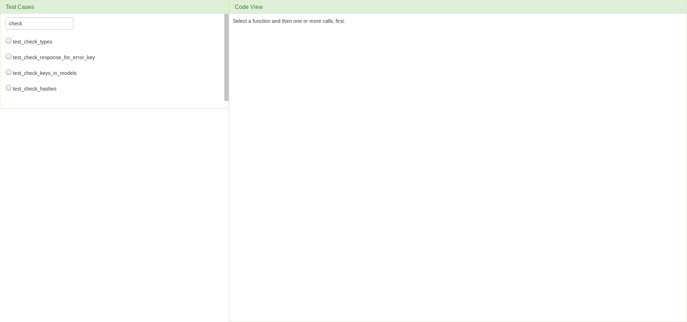

A Guide through the VyPR Analysis Environment
VyPR can also be used to carry out the performance analysis with regards to test cases. If data about the tests is detected in the database, the web tool loads its slightly different version. The same analysis options are still available, but before going through the selection sequence to fix a function, its calls, a binding, a sub-atom and the instrumentation point(s), we need to choose a test case and filter the subsequent data to show only the information collected during the executions of that test.

As there can be a large number of monitored test cases, it is possible to filter the names by typing in a part of the name.
Afterwards, proceed as explained before, starting with selecting a function that was monitored during the selected test's executions.